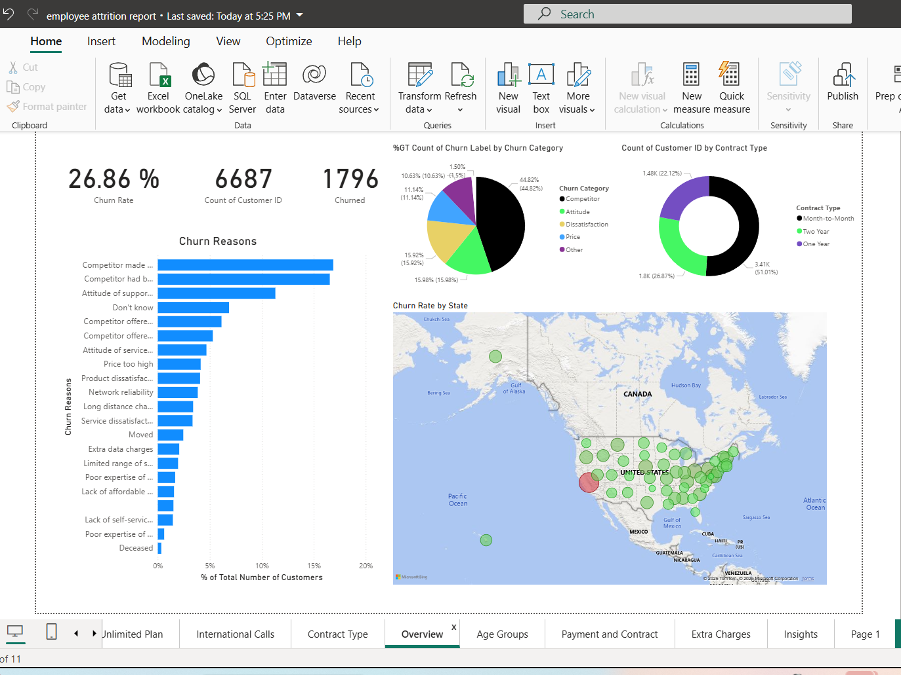

← Back to overview
Employee Attrition Analysis – Detailed Report
Objective
The objective of this analysis is to understand employee attrition patterns
and identify key factors contributing to employee turnover.
Key Insights
- Higher attrition observed in specific departments and job roles
- Employees with lower job satisfaction show higher exit rates
- Salary and years at company influence retention
Dataset
This analysis uses the employee dataset stored in this repository. You can download it below and review the raw data.
⬇ Download Dataset (CSV)
Power BI Dashboard
Below is a snapshot of the Power BI dashboard used to analyse employee attrition trends.

Dashboard Analysis
The dashboard provides a high-level and detailed view of employee attrition across
multiple dimensions, including department, job role, contract type, and geography.
Overall Attrition Overview
- The overall attrition rate is 26.86%, indicating that more than one in four employees have left.
- A total of 6,687 employees were analysed, out of which 1,796 employees churned.
- This level of attrition represents a significant risk to workforce stability and productivity.
Key Drivers of Attrition
- Competitive offers from other companies are the leading cause of attrition.
- Service-related factors such as support attitude and employee dissatisfaction contribute heavily.
- Salary levels and years at the company have a noticeable impact on retention.
Contract Type Impact
- Employees on month-to-month contracts show the highest attrition.
- Longer-term contracts (one-year and two-year) demonstrate lower churn rates.
- This suggests that contract stability plays a key role in employee retention.
Geographic Trends
- Attrition is not evenly distributed across regions.
- Specific states show consistently higher attrition rates.
- Regional factors such as local competition and employment opportunities may influence turnover.
Business Recommendations
- Promote long-term contracts: Encourage employees to move from month-to-month arrangements to longer contracts through incentives.
- Improve employee experience: Focus on improving support quality, manager engagement, and workplace satisfaction.
- Review compensation strategy: Conduct regular salary benchmarking to remain competitive in high-risk roles.
- Target high-attrition regions: Implement focused retention initiatives in states with consistently higher churn.
Conclusion
This analysis highlights that employee attrition is driven by a combination of
competitive pressures, employee experience, and contract structure.
By addressing these areas, organisations can significantly reduce turnover
and improve long-term workforce stability.
The dashboard was built using Power BI to explore trends interactively.
(Dashboard image will be added here next)